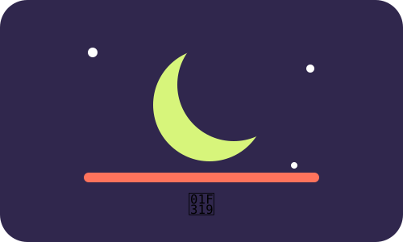

MODULE 02 · 03
🌙 Sueño

SUBSECCIÓN
Pantalla y descanso
El descanso suficiente es parte del bienestar. Las recomendaciones institucionales sobre sueño destacan la importancia de mantener horarios regulares y crear condiciones que faciliten el descanso.
Fuente / respaldo
CDC (2024), About Sleep; NHLBI (2024), Healthy Sleep Habits.
CDC (2024), About Sleep; NHLBI (2024), Healthy Sleep Habits.
Pausa de cierre
00:30
Respira, baja el ritmo y deja el dispositivo fuera de tu atención durante 30 segundos.